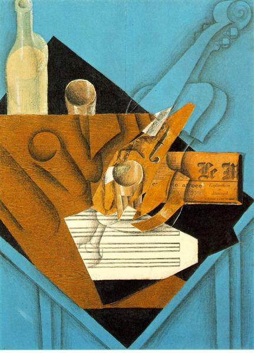

Avignonské dámy od Pabla Picasas
"Demoiselles d'Avignon" od Pabla Picassa je obraz z roku 1907, který
zobrazuje pět nahých prostitutek. Je to průlomové dílo kubismu, ve kterém Picasso zkoumá
deformaci a geometrizaci lidské formy. Tento obraz způsobil šok a kontroverzi, ale
je
považován za jedno z nejvýznamnějších děl moderního umění.
Město od Fernanda Légera
"The City" od Fernanda Légera je obraz z roku 1919, který zobrazuje
moderní městskou krajinu jako geometrickou abstrakci. Léger využil jasných barev a ostře
definovaných tvarů, aby vyjádřil dynamiku a ruch velkoměsta. Tento obraz je typickým
příkladem Légerova kubistického stylu a jeho zájmu o průmyslovou estetiku a moderní
technologie.
Balustráda a lebka od Georgese Braque
"Balustre et Crane" od Georgese Braquea je kubistický obraz z roku
1922, který kombinuje geometrické tvary balustrády a lebky v abstraktní kompozici.
Braque zde experimentuje se strukturou a prostorovými vztahy, typickými pro jeho
kubistický styl.

Hudebníkův stůl od Juana Grise
"The Musician's Table" od Juana Grise z roku 1914 je kubistickým
obrazem, který prostřednictvím geometrických tvarů a textur zachycuje hudebníkův
stůl, zároveň evokuje atmosféru hudby a hudebního prostředí.